对话禅修艺术 | 郑学武
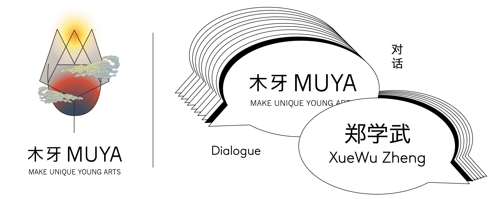欢迎来到木牙Make Unique Young Arts，让我们一起来探索艺术家的禅修！
在时代不断发展的过程中，文化传播和对外输出成了必不可少的一环。禅修也是被广为传播的文化之一。禅修在印度语里的意思是“心灵的培育”，顾名思义就是把心灵中美好的状态培育出来。而当禅修进入艺术又能得到怎么样的化学反应呢？
In the process of constant development of The Times, cultural communication and export has become an indispensable link. Meditation is also one of the most widely disseminated cultures. Meditation means "cultivation of the mind" in Hindi, as the name implies, the cultivation of a good state of mind. And what kind of chemistry does meditation get when it comes to art?
艺术家通过不断的禅修和冥想脱离困扰和诱惑，用自己的艺术作品展示自己对人类，社会，环境，乃至整个世界的理解，从而达到追求自身的效果。今天我们有幸邀请到艺术家/国际艺术策展人，郑学武老师来带领我们走进他的艺术禅修的世界。
Through constant meditation and meditation, artists get rid of troubles and temptations, and show their understanding of human beings, society, environment and even the whole world with their artistic works, so as to achieve the effect of pursuing themselves. Today we are honored to have an artist/international art curator, Zheng Xuewu, to lead us into the world of his art meditation.
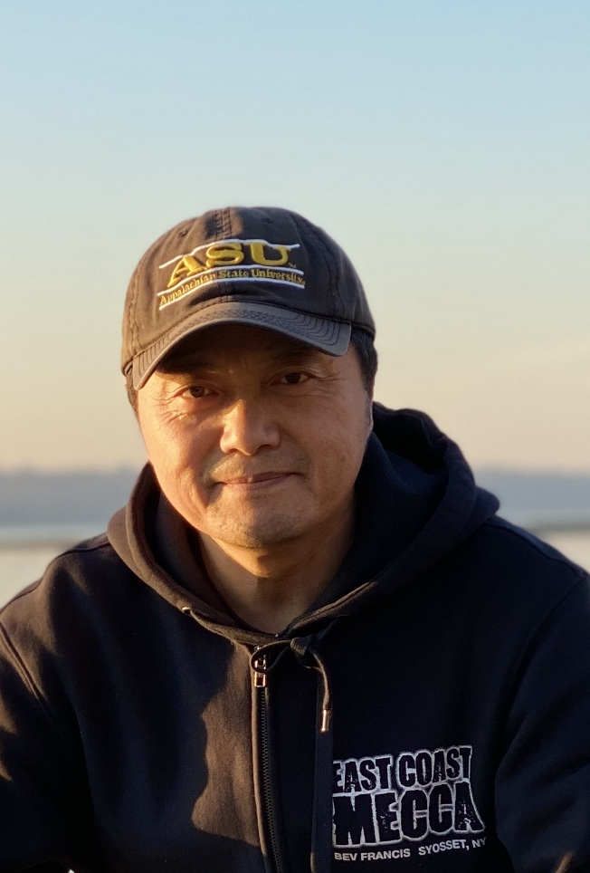
郑学武
职业艺术家/国际艺术策展人
出生于黑龙江农垦建设兵团，先后修学业于哈尔滨师范大学艺术学院美术系、中央工艺美术学院装饰绘画系、纽约州立大学美术学院版画系。
美国阿巴拉契亚州立大学、美国北卡罗来纳大学的客座教授；美国哥伦比亚大学、帕森斯学院、瓦萨学院及爱尔兰科克大学的访问学者。
美国弗蒙特艺术中心、比利时马瑟瑞尔艺术中心和韩国光州市立美术馆的国际驻访项目艺术家。版画和装置作品参加过亚洲、欧洲、澳大利亚和美国的众多展览。
重要收藏：中国美术馆、德国科勒惠支博物馆、韩国光州市立美术馆、美国阿克兰博物馆、澳大利亚驻华大使馆等。
Zheng Xuewu
Artist/International art curator
Born in HeiLongJiang（黑龙江） Agricultural Reclamation Construction Corps.
He studied in the Department of Fine Arts at Harbin Normal University and the Department of Printmaking at the State University of New York, School of Fine Arts.
Zheng Xuewu also is a visiting professor at Appalachian State University and the University of North Carolina, USA; visiting scholar at Columbia University, Parsons, Vassar College, and Cork University in Ireland；International resident artists from The Vermont Art Center, Belgium, And Gwangju City Museum of Fine Arts. His work has been exhibited in many exhibitions.（Asia, Europe, Australia and the United States)
Important collections: National Art Museum of China, Museum of Kohler Huizhi, Gwangju Museum of Korea, Akram Museum of the United States, Australian Embassy in China, etc.
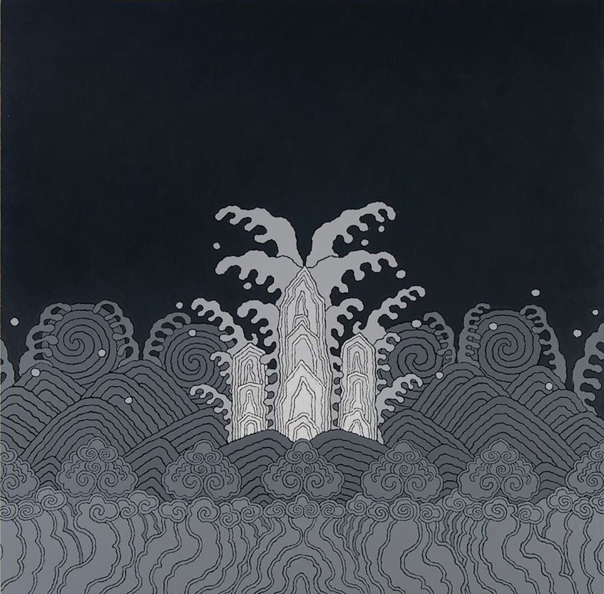
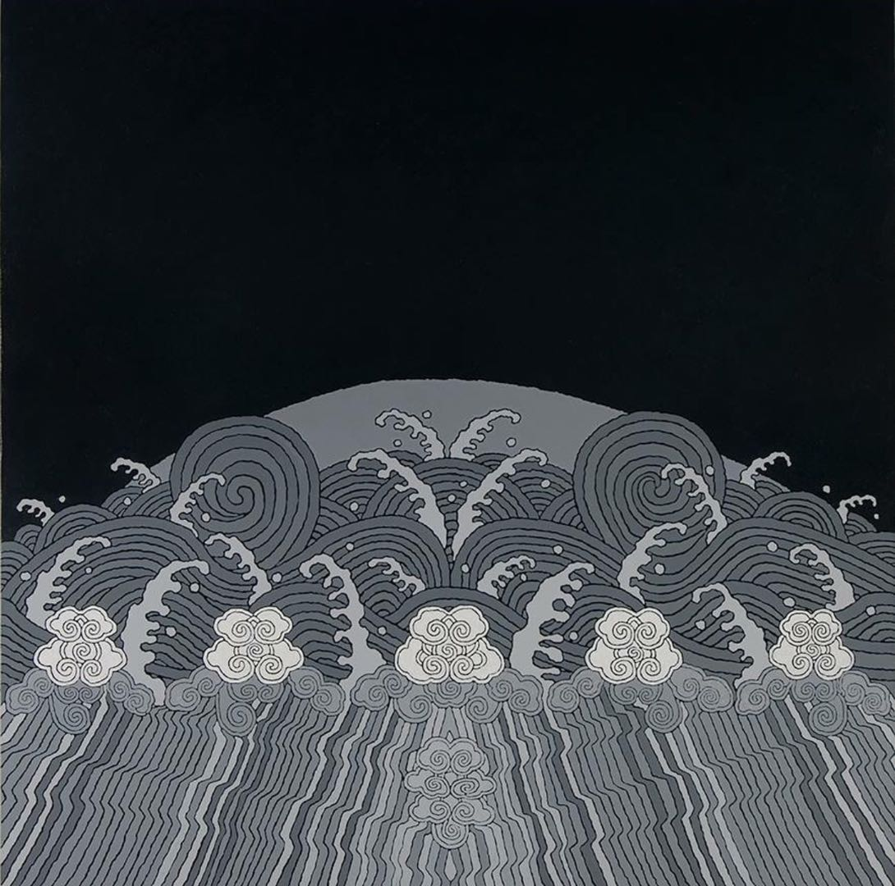
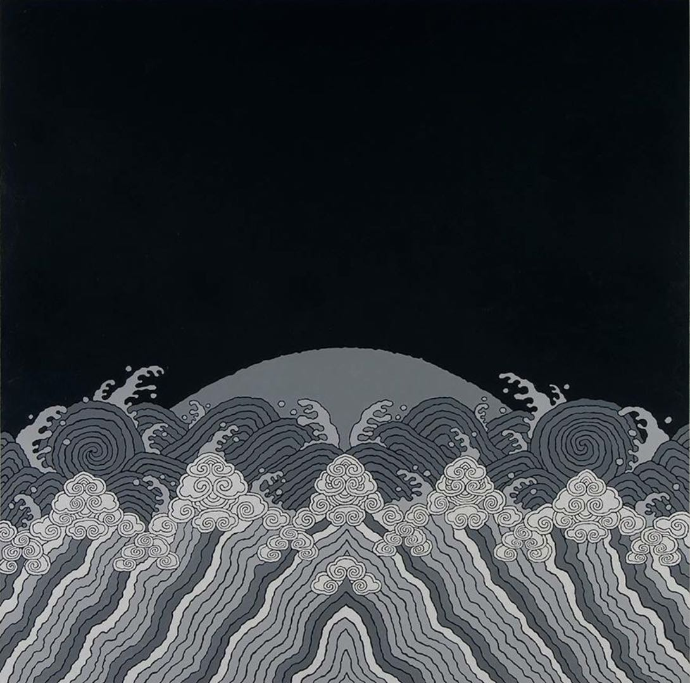
"我以极为个人化的方式审视历史和今天，思考东西方文化与现实问题，将哲学、宗教及朴素的人生观融进艺术。我以极为个人化的方式打通东西方文化在语言上的隔阂，并且关注人类与自然和现代文明的关系问题。
我也认为，艺术实践的过程，是一种平凡的劳作，是一种朴素而自然的创造，是一种行动的自觉。我创作作品、思考艺术的同时，也是我个人进行禅修和自我对话的过程，这个创作过程比最终完成的作品更加重要。艺术实践永无止境，艰难探索时的内心体验，对我来说总是如梦如幻般的美妙。
“禅修”是我的生活内容、是我活着的状态。"
"I examine history and now in a very personal way, think about Eastern and Western cultures and practical issues, and incorporate philosophy, religion, and a simple outlook on life into art. I bridge the language barrier between Eastern and Western cultures in a very personal way and pay attention to the relationship between human beings, nature, and modern civilization.
I also believe that the process of artistic practice is ordinary work, a simple and natural creation, and a consciousness of action. When I create works and think about art, it is also the process of my personal meditation and self-talk. This creative process is more important than the final work. There is no ending to artistic practice, and the inner experience of difficult exploration is always as wonderful as a dream for me.
"Meditation" is the content of my life and the state of my life."
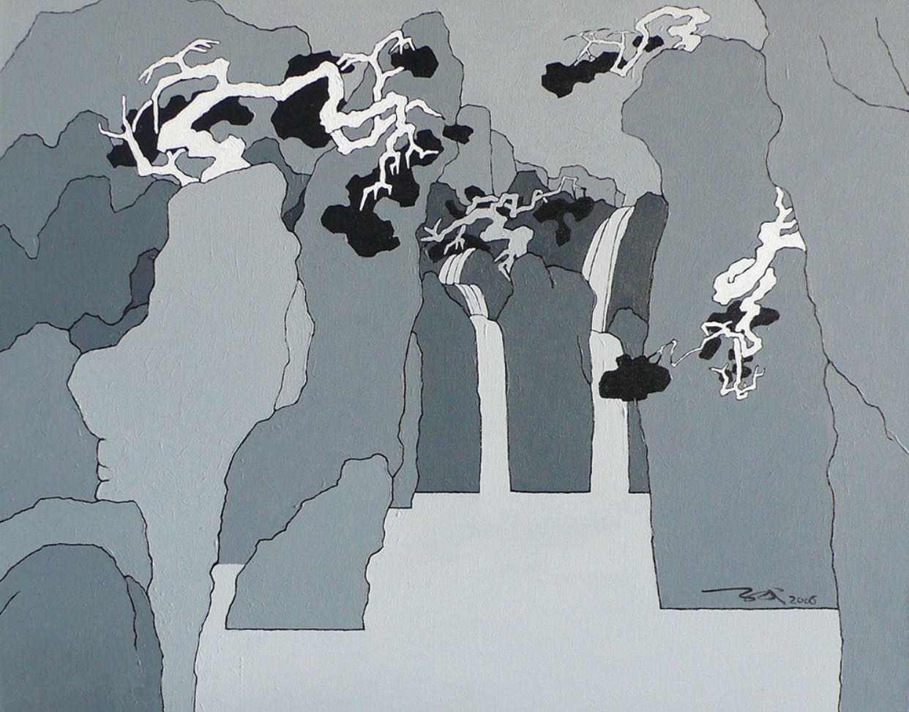
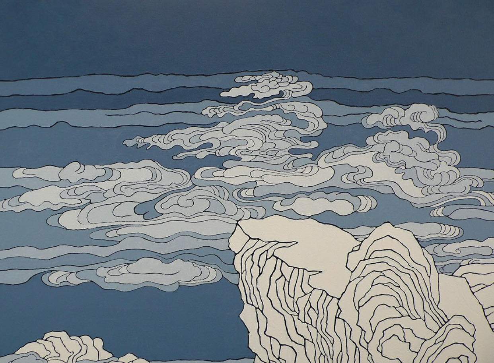
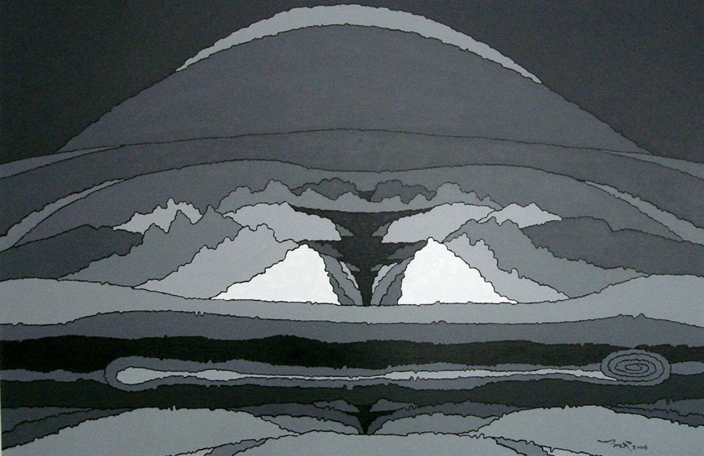

➤ 木牙MUYA: 同时作为艺术家和策展人有什么人生历程、感悟可以分享？对青年艺术家又有哪些人生建议？
At the same time, as an artist and a curator, what experiences and insights can you share? What advice do you have for young artists?
郑学武 Xuewu Zheng: 艺术家与策展人双身份现在并不是新鲜的事情，有不少艺术家都同时兼做展览策划。多方面的原因吧，我的情况是首选为自己创造了更多的展览机会；因为我有很多博物馆、美术馆、画廊等场馆及策展人和朋友的熟悉关系，我有很多机会策划展览，顺便可以帮助很多的艺术家增加展览机会。做独立的艺术家和通过策划活动与其他艺术家合作，两个身份互换交叉中，学习到很多东西。
对年轻人，就是期望他们成长的过程中能够得到更多的帮助，他们自己要大胆的推翻一切条条框框。
The dual identities of artists and curators are not new at present. There are many reasons, many artists also do curate at the same time as they work. In my situation, first I created more exhibition opportunities for myself; because I know a lot of museums, art galleries, galleries, other venues, curators and friends. I have opportunities to curate exhibitions. By the way, it can help many artists increase their exhibition opportunities. Being an independent artist and collaborating with other artists through planning activities. Those two identities are interchanged and crossed. I have learned a lot from it.
For young artists, it is hoped that they can get more help and they should boldly overthrow all restrictions as they grow up.
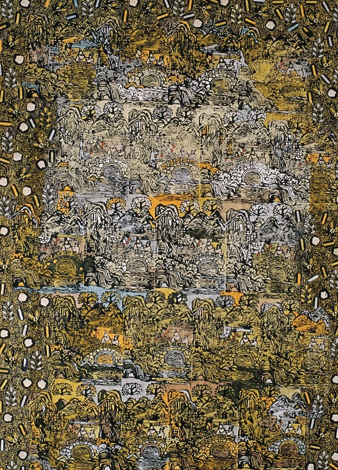
➤ 木牙MUYA: 平时是如何规划自己的工作时间的？对于工作室的布置有没有什么特殊的喜好？说出一项在生活中最能激发您设计灵感的方式？
How do you plan your work normally? Do you have any preferences for the layout of the studio? How do you inspire your work?
郑学武 Xuewu Zheng: 我的创作无论材料、画种都是一个“禅修”的理念，所以我会随时随地进入工作状态、没有时间计划。工作室没有特别的布置，基本是工作和展示相结合的样子。我的生活和创作，很多时候没有明显界限，所以很难说出某一个东西会激发我的灵感。
Regardless of the material and type of painting, my creation is a "meditation" concept, so I will pay attention to my work anytime anywhere without time to plan. There is no special layout in the studio, it is basically a combination of work and installation. There are often no clear boundaries between my life and creation, so it is difficult to say that a certain thing will inspire me.
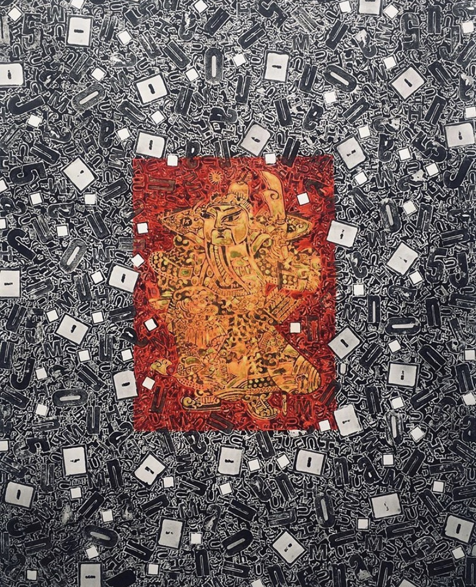
➤ 木牙MUYA: 在疫情严重的当下，很多行业和市场都受到了影像。疫情对您的生活是否有影响？对于您所处的行业和市场会有哪些改变？
We know the epidemic affects lots of business and market in nowadays. Does the epidemic affect your life? What changes will happen to your industry?
郑学武 Xuewu Zheng: 疫情对所有人的生活都有影响，毫无疑问。很多艺术家的艺术市场很多元化、凡相互关联，疫情使得方方面面停止，绝大多数艺术家没有了艺术市场。
The epidemic has an impact on everyone's lives, no doubt.The art market of many artists is diversified and interrelated. The epidemic has stopped all aspects, and most artists lost their resources..
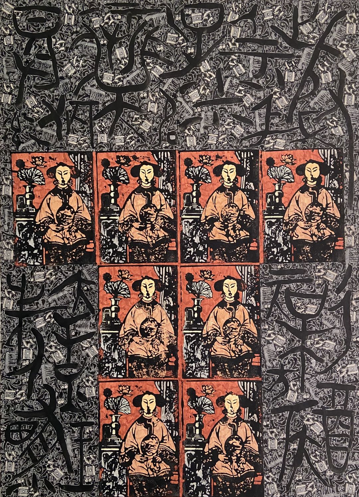
➤ 木牙MUYA: 对于当下的年轻人，在还未步入社会前如何提前适应艺术社会？或者说可以通过哪些方式进一步发展自己的专业而不会变成毕业即失业的情况？
For young people, how can they adapt to the art society before they enter society? In other words, what ways can people further develop their major without becoming unemployed after graduation?
郑学武 Xuewu Zheng: 了解社会、适应社会的唯一方法是进入社会，学生必须一定程度的接触社会，接触深度决定了了解和适应的程度。学校是训练场不是战场，学业是储备，有准备的适当上战场才能成长、才能迅速适应。
The only way to understand and adapt to society is to enter society. Students must have a certain degree of contact with society. The depth of contact determines the degree of understanding and adaptation. School is a training ground not a battlefield. Schoolwork is a reserve. Only those who are prepared and properly can grow and adapt quickly.
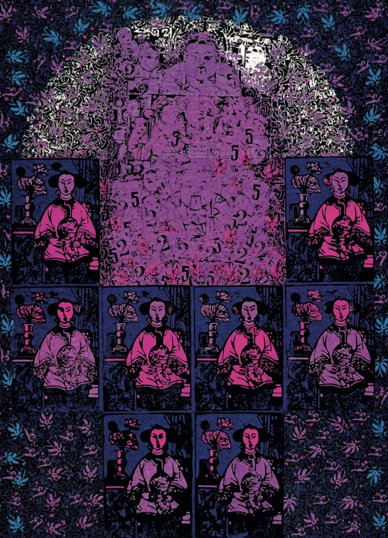
➤ 木牙MUYA: 在您这样的年龄，重返校园攻读双硕士，是什么样的原因让您做出这样的决定？在这期间又有哪些有趣的经历呢？
At your age, returning to campus to study for a double master's degree. What made you make such a decision? What are the interesting experiences during this period?
郑学武 Xuewu Zheng: 对于外国人来说，学校是了解西方教育体系和理念甚至生活方式最为重要的地方。对于一个成熟的艺术家，回到学校做艺术学生是个很大的挑战，在思想上需要腾空自己固有的思考问题的方法和其他很多东西。学习过程中有无数有趣的经历、受益匪浅。
For the western, school is the most important place to learn about their education system, ideas, and even the way of life. For a mature artist, it is a great challenge to go back to school as an art student, mentally vacating his inherent way of thinking and many other things. There are countless interesting experiences and benefits in the learning process.
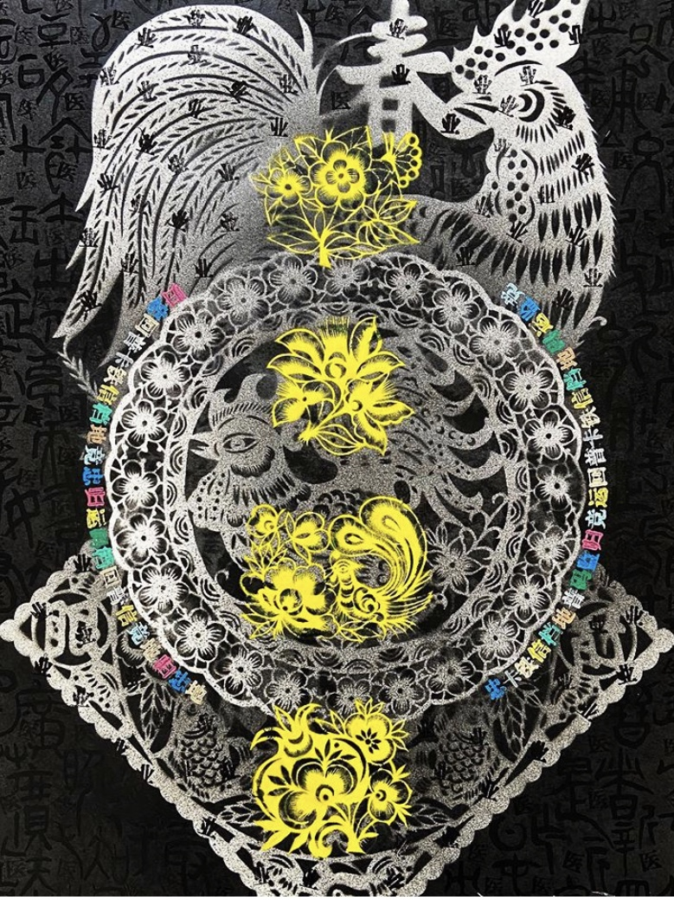
➤ 木牙MUYA: 为什么选择手造纸作为作品媒介，对作品的表现又有怎样的的帮助？制作了这么多的作品，哪件或者哪个系列是最喜爱的呢？作为艺术家，你最想通过作品传达给普通公众什么？
Why do you choose hand-made paper as the medium of your works and how does it help the performance of your works? With so many works, which one or series is your favorite? As an artist, what do you want to convey to the general public through your work?
郑学武 Xuewu Zheng:手工造纸是西方艺术教育的版画专业里最为重要的一个内容，无论课程发给我什么材料和技术，我都会迅速用到我的作品的实践中。我的所有作品都是一个大系列，也就是说，我无论使用什么材料都是在做一件作品，都是一件作品的一部分，都喜欢。我传达一个观念给观众：艺术可以是变化万千的可能，每个人都可以创造出自己的艺术。
Hand-made paper is the most important content in the printmaking profession of Western art education. No matter what materials and techniques are sent to me in the course, I will quickly apply it in my practices.
All my works are a large series. That is to say, no matter what material I use, I am still making the work, and they are all part of the work.I conveyed a concept to the audience: art can have a lot of possibilities, and everyone can create their own art.
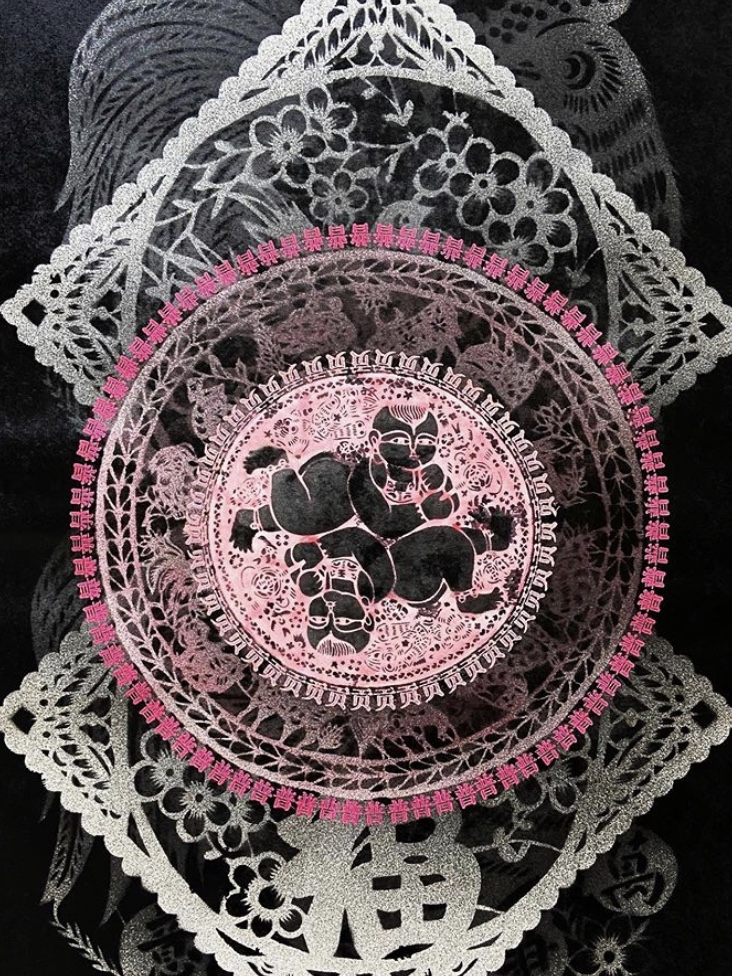
➤ 木牙MUYA: 现在艺术电商和各种自媒体平台非常多，您是如何推广您的作品的呢？有些艺术家疲于在各种平台上注册和宣传推广自己的作品，那您有哪些自己独有的宣传方式呢？
There are many art e-commerce and various self-media platforms now, how do you promote your work? Some artists are tired of registering and promoting their works on various platforms, so what are your unique ways of promotion?
郑学武 Xuewu Zheng: 网络时代，使用网络做事情是这个时代的特点，我也不例外。网站无论多少，自己的风格特点确定了，在哪里出现都使用相对固定的内容，就不会有很多劳动、并不会太忙碌。当然最理想的是要有合作画廊、相关艺术工作。
In the network era, using the network to do things is the characteristic of this era. I am no exception. My own styles and characteristics are determined, no matter how many sites, where there is all relatively fixed content. This will not need to be too much labor and not too busy. Of course, it will be nice to have a cooperative gallery to work with or some related artworks.
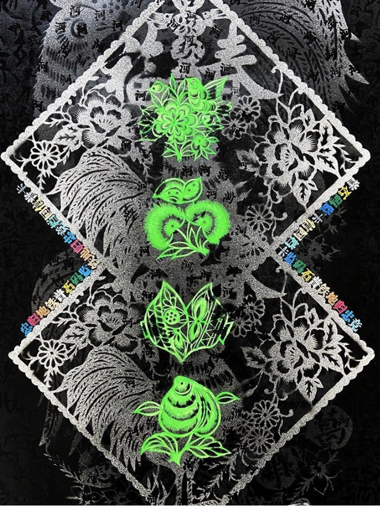
➤ 木牙MUYA: 第一份工作是什么？大学的专业和现在的事业有关吗？是什么专业？哪一个工作对于现在的事业最有帮助？具体做的什么？时长？
What was your first job? Is your major related to your current career? What's your major? Which job is most helpful for your current career? What exactly do you do? How long?
郑学武 Xuewu Zheng:曾经做过的工作是大学艺术教师、广告公司平面设计师、国际艺术活动策展人、艺术家国际驻访项目创始人等，各种事情相互交叉但都是艺术工作。
I used to work as an art teacher in a university, a graphic designer in an advertising agency, a curator of international art events, a founder of the artists' International resident program, etc., all of which are intersecting but all related to art.
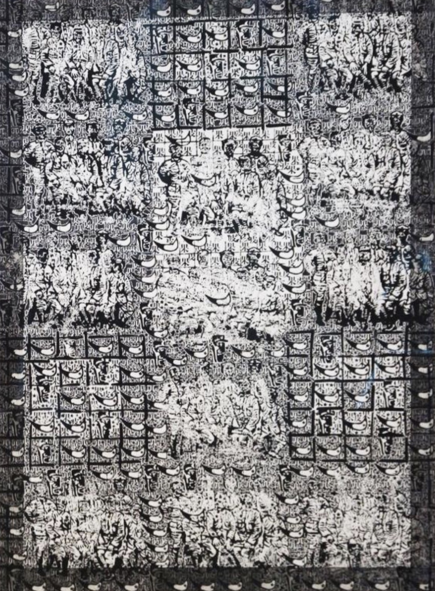
芝加哥大学博物馆藏品之一 - （无题）
➤ 木牙MUYA: 巫鸿老师主办的芝加哥大学博物馆“中国馆藏项目”收录了好几件您的版画和绘画作品，作为他们的首批馆藏，您能简单介绍一下这里头中您最喜爱的一个作品，和作品背后的含义？
As the first collection of several of your prints and paintings in the University of Chicago Museum's "China Collection" organized by Professor Wu Hong. Could you briefly introduce one of your favorite works here and the meaning behind it?
郑学武 Xuewu Zheng:因为疫情的原因，不知道他们的事情进展如何。其中有我的版画作品，是我的持续至今的代表性作品“禅说”系列，“禅说”作品是我生活禅修过程中的产物，很个性化，算是一个现代艺术家对传统东方哲学、宗教的诠释吧。
I don't know how they're doing because of the epidemic. For my prints and paintings, which are my representative works "Zen Theory" series. "Zen Theory" works are the product of my meditation practice in life. They are very personalized and can be regarded as a modern artist's interpretation of traditional Oriental philosophy and religion.
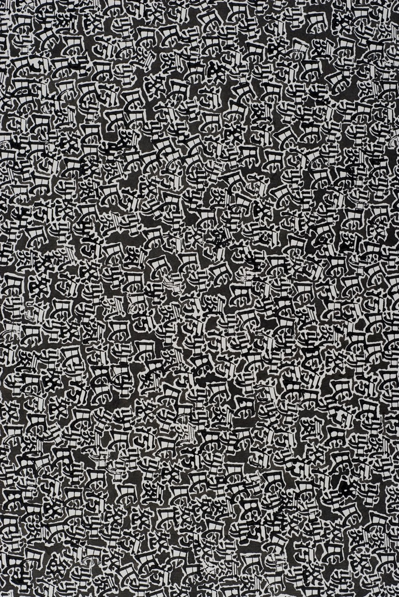
“禅说”系列 - （细节）
➤ 木牙MUYA: 艺术家驻地项目的申请充斥着许多复杂的手续，步骤和困难。作为新手艺术家，如果想做到不出错，不偏离申请方向，该如何申请到自己理想的项目？又有哪些国内外驻地项目可以私心推荐的呢？
The application process for the artist residency program is fraught with many complicated procedures and difficulties. As a new artist, if I don’t want to make mistakes and not deviate from the application direction, how can I apply for my ideal project? What domestic and foreign resident projects can be personally recommended?
郑学武 Xuewu Zheng:我在中国和在美国从事国际驻访项目工作十多年，也并不能给年轻艺术家很好的建议关于申请项目，全世界各地的项目千差万别，各有侧重。年轻艺术家要有明确目的，你选择什么专项、你选择项目所在地历史或现代环境等，你自己要清楚。再研究哪些项目所具备和提供的情况正是你之所需再去申请。同时，不要迷信任何一个名气大的项目，尽量把驻访项目当作连结你未来工作的桥梁，不要单纯去参加项目
I have been working on international residential projects in China and the United States for more than ten years. But I still am not able to give good advice to young artists about the application of projects.
Projects around the world vary from place to place with different focuses. Young artists should have a clear purpose. You should know what kind of project you choose, the historical or modern environment where the project is located, etc.
Study what programs are available and offer exactly what you need before you apply. At the same time, don't be superstitious about any fame project. Try to use the residential project as a bridge to your future job instead of purely attending it.
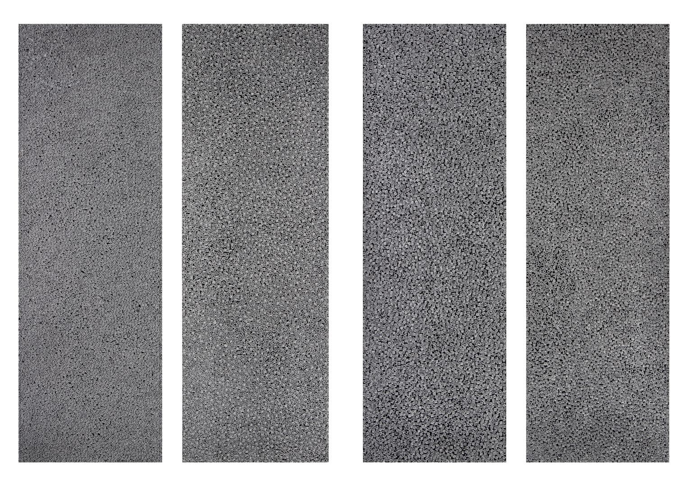
“禅说”系列
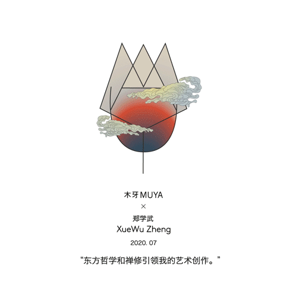木牙微信订阅号